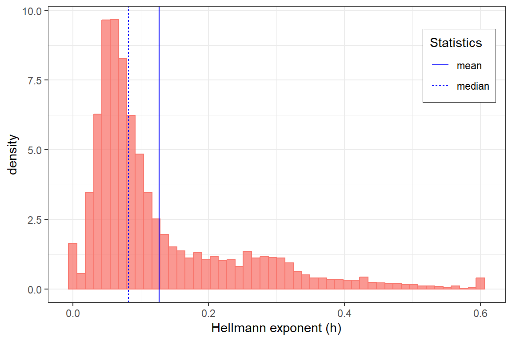
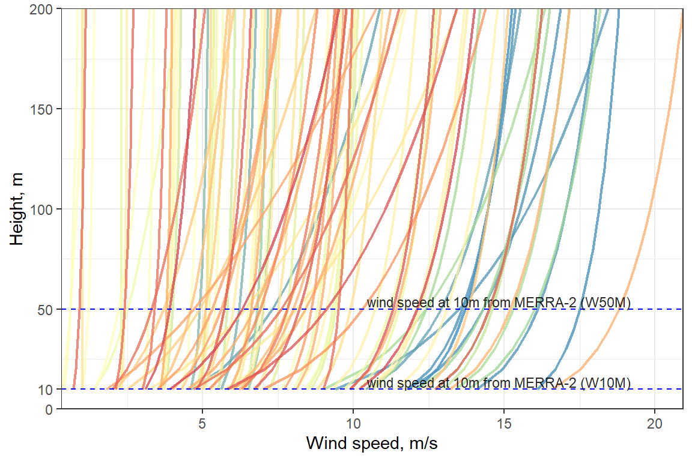
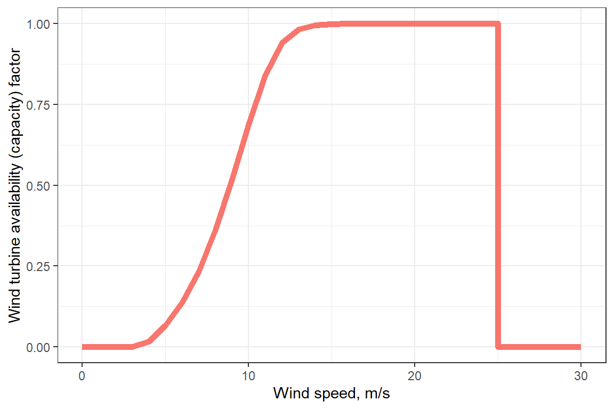

library(merra2ools)
library(tidyverse)
library(data.table)
# library(kableExtra)Wind speed extrapolation
Hellmann constant
dat <- merra2ools::merra2_mar %>%
select(-SWGDN, -ALBEDO) %>% # drop solar radiation
mutate(h = fH(W10M = W10M, W50M = W50M)) # Hellmann constant
summary(dat$h) # check basic statistics
#> Min. 1st Qu. Median Mean 3rd Qu. Max.
#> 0.00000 0.05406 0.08197 0.12715 0.16302 0.60000| datetime | locid | T10M | W10M | W50M | PS_hPa | h |
|---|---|---|---|---|---|---|
| 2010-03-21 00:30:00 | 1 | 217 | 6.5 | 9.0 | 683 | 0.2021963 |
| 2010-03-21 00:30:00 | 2 | 217 | 6.5 | 9.0 | 683 | 0.2021963 |
| 2010-03-21 00:30:00 | 3 | 217 | 6.5 | 9.1 | 683 | 0.2090620 |
| 2010-03-21 00:30:00 | 4 | 217 | 6.5 | 9.1 | 683 | 0.2090620 |
| 2010-03-21 00:30:00 | 5 | 217 | 6.6 | 9.1 | 683 | 0.1995757 |
| 2010-03-21 00:30:00 | 6 | 217 | 6.6 | 9.1 | 683 | 0.1995757 |
Figure code
(h_mean <- mean(dat$h))
#> [1] 0.1271491
(h_median <- median(dat$h))
#> [1] 0.08197119
# .GeomVline_draw_key <- GeomVline$draw_key
GeomVline$draw_key <- GeomHline$draw_key # adjusting legend
fig <- ggplot(dat) +
geom_histogram(aes(h, after_stat(density),
fill = "Hellmann", colour = "NA"),
alpha = .75, show.legend = F, bins = 50) +
labs(x = "Hellmann exponent (h)") +
geom_vline(aes(xintercept = x, linetype = name),
data = tibble(name = c("mean", "median"),
x = c(h_mean, h_median)),
colour = "blue") +
scale_linetype(name = "Statistics") +
theme_bw() +
theme(legend.position = c(0.9, .8),
legend.box.background = element_rect(
colour = "black", fill = "grey"
))

Distribution of Hellmann constant, estimated on MERRA-2 sample
Extrapolation
# extrapolation
for (i in seq(10, 200, 10)) {
if (i == 10) cat("Height, m: ")
cat(i)
dat[[paste0("w", i)]] <- fWSE(i, dat$W10M, dat$h)
cat(" ")
}
#> Height, m: 10 20 30 40 50 60 70 80 90 100 110 120 130 140 150 160 170 180 190 200Figure below shows a sample of extrapolated speed of wind from 10 and 50 to up to 200 meters height.
Figure code
dd <- dat %>% ungroup() %>%
select(datetime, locid, starts_with("w", ignore.case = F)) %>%
pivot_longer(cols = starts_with("w"), names_prefix = "w") %>%
mutate(name = as.integer(name))
set.seed(0)
fig <- ggplot(filter(dd, locid %in% sample(locid, 100), datetime == dd$datetime[1])) +
geom_line(aes(value, name, group = locid, colour = locid),
alpha = .75, show.legend = F, size = .75) +
scale_colour_distiller(palette = "Spectral") +
geom_hline(yintercept = 10, linetype = "dashed", colour = "blue", alpha = 1) +
geom_hline(yintercept = 50, linetype = "dashed", colour = "blue", alpha = 1) +
# ylim(0, NA) +
labs(x = "Wind speed, m/s", y = "Height, m") +
scale_x_continuous(expand = c(0,0)) +
scale_y_continuous(expand = c(0,0), limits = c(0, NA),
breaks = c(0, 10, 50, 100, 150, 200),
minor_breaks = c(0, 10, seq(25, 200, by = 25)),
labels = c(0, 10, 50, 100, 150, 200)) +
geom_text(data = tibble(name = c("wind speed at 10m from MERRA-2 (W10M)",
"wind speed at 10m from MERRA-2 (W50M)"),
x = c(19.2, 19.2), y = c(11, 51)),
size = 3, colour = "black", alpha = .85,
aes(x, y, label = name), vjust = 0, hjust = 1) +
# nudge_x = 0.25, nudge_y = 7) +
theme_bw()

Wind speed extrapolation using estimated Hellmann constant.
Wind speed at 50m
locid <- merra2ools::locid %>% select(locid, lon, lat)
dat2 <- select(dat, datetime, locid, w10, w50, w100, w200) %>%
full_join(locid)
#> Joining, by = "locid"Figure code
gif_merra(dat2, "w50", 1, fps = 12, filename = "merra_wind_50m_12fps.gif")
Wind speed at 50 meters height, m/s
Wind power curve
Figure code
# Simplified wind power curve
wpc <- tibble(
mps = c(0:25, NA, 25.01, 26:30), # wind speed m/s
af = fWPC(mps) # availability factor [0,1]
)
fig <- ggplot(wpc) +
geom_line(aes(x = mps, y = af, colour = "red"), size = 2, show.legend = F) +
labs(x = "Wind speed, m/s",
y = "Wind turbine availability (capacity) factor") +
theme_bw()#> Warning: Removed 1 row(s) containing missing values (geom_path).

Simplified wind power curve
Estimated hourly availabillity factor
dat2 <- mutate(
dat2,
af10 = fWPC(w10),
af50 = fWPC(w50),
af100 = fWPC(w100),
af200 = fWPC(w200)
)
summary(dat2$w50); summary(dat2$af50)
summary(dat2$af50[dat2$w50 > 25])
plot_merra(dat2, "w50", 1)
plot_merra(dat2, "af50", 1, limits = c(0, 1),
palette = "Blues", direction = 1, legend.name = "AF")
plot_merra(dat2, "af10", 1, limits = c(0, 1),
palette = "Blues", direction = 1, legend.name = "AF")
plot_merra(dat2, "af100", 1, limits = c(0, 1),
palette = "Blues", direction = 1, legend.name = "AF")
plot_merra(dat2, "af200", 1, limits = c(0, 1),
palette = "Blues", direction = 1, legend.name = "AF")
gif_merra(dat2, "af50", 1, limits = c(0, 1), fps = 12,
palette = "PuBu", direction = 1,
legend.name = "AF",
filename = "merra_wind_af50_12fps.gif")
Hourly capacity factor for a generic wind turbine with 50 meters hub height.